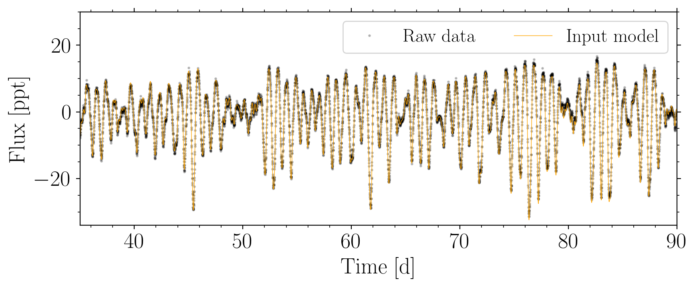
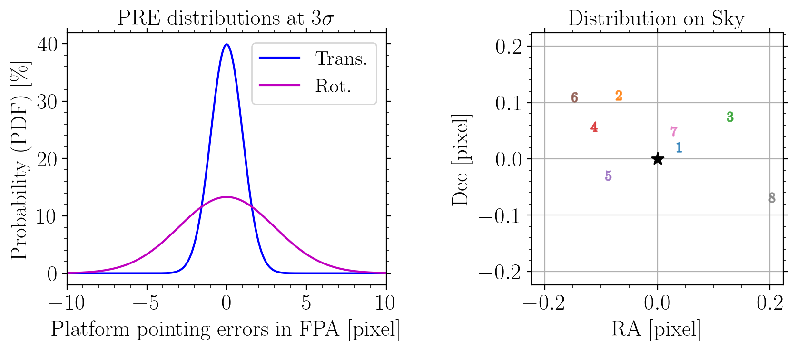
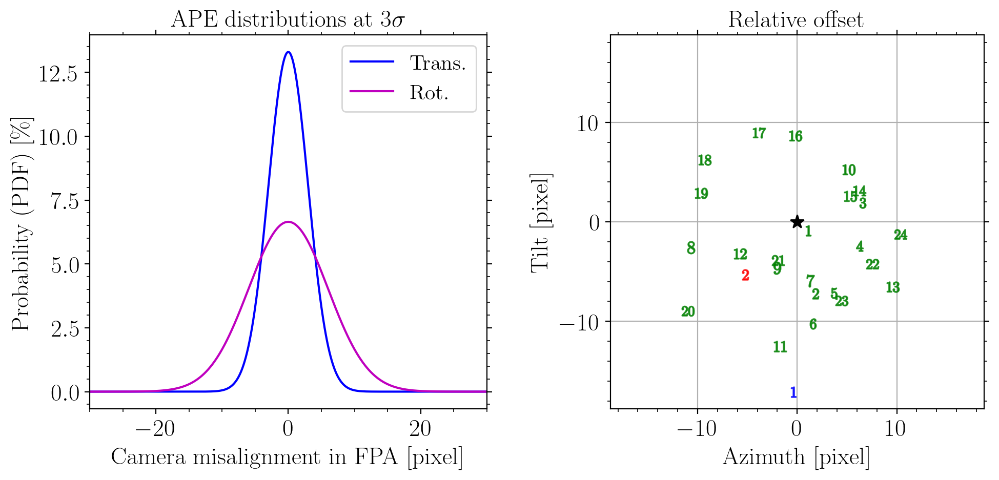
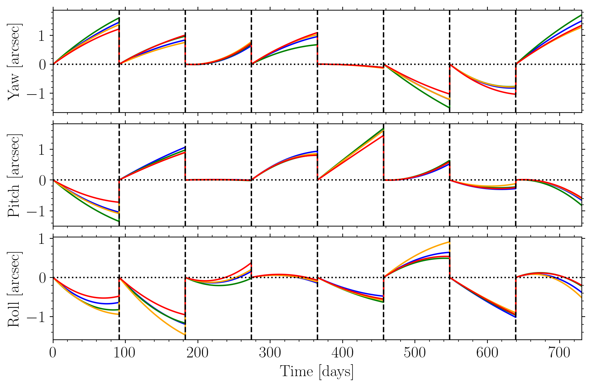
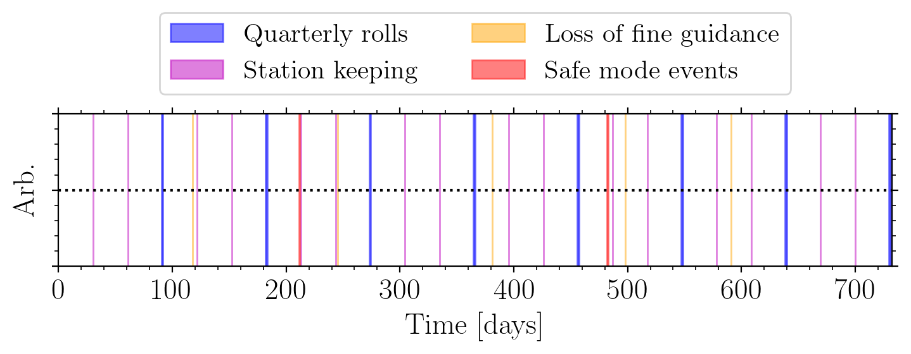
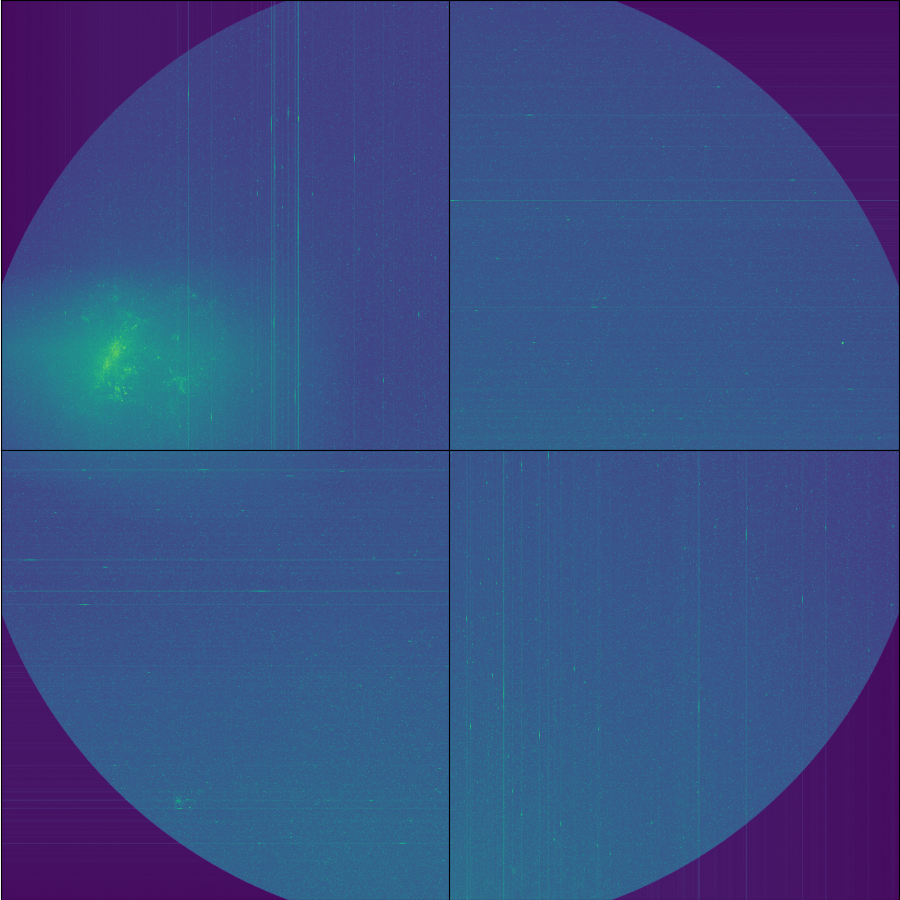

Tutorials¶
PLATOnium is PlatoSim’s user friendly command-line interface to quickly setup a large scale multi-camera and multi-quarter simulation, using the PLATO Input Catalogue (PIC), stellar variability input, and realistic instrumental systematics. Thus, almost all simulations will involve the four following steps provided by the software:
picsim: Tool to generate stellar cataloguesvarsim: Tool to generate noise-less light curvespayload: Tool to generate instrumental systematicsplatonium: Tool to run a PlatoSim multi-camera and multi-quarter simulation
Both picsim, varsim, and payload creates immediate userable input files to run platonium in an easy and generic way.
Notice all the above scripts share the same architecture for default I/O argument parsing:
-i: Input file/folder-o: Output file/folder-v: Verbosity (a.k.a log level)-p: Flag for plotting
Furthermore, all scripts have an adjustable verbosity level (i.e. log level), which particularly becomes important when running simulations on a computing cluster. The verbosity is also identical to PlatoSim usage, with the exception of the added cluster mode, the removal of the YAML file copy, and the removal of the PlatoSim log file (with the exception of this action in debug mode):
-v 0: Cluster mode:error-v 1: Warning mode:error,warning-v 2: Default mode:error,warning,info-v 3: Debug mode :error,warning,info,debug, and save all log files
picsim¶
Create a customised PIC
To speed up the process of running realistic simulations, a script called picsim (a.k.a. PIC of Destiny) is made available for the user. This script draw target and contaminant stars from the PLATO Input Catalogue (PIC) created by Montalto et al. (2021).
The script picsim can query stars from the Long-duration Observation Phases (LOPs) of the PIC 2.2.0.1 (referenced as PLATO Fields). Hence, in total four PLATO fields are available, defined by the equatorial coordinates of the platform orientation:
- LOP South 2 (LOPS2): \(\ \ \ \ \ \ \alpha = \ \ 95.31043^{\circ}, \ \ \ \ \ \ \delta=-47.88693^{\circ}, \ \ \ \ \ \ \ \kappa=+13.9947^{\circ}\)
- LOP North 1 (LOPN1): \(\ \ \ \ \ \ \ \alpha = 277.18023^{\circ}, \ \ \ \ \ \ \delta=+52.85952^{\circ}, \ \ \ \ \ \ \ \kappa=-13.9947^{\circ}\)
These catalogues compose more than \(300,000\) PLATO targets from the samples (P1, P2, P4, and P5), of which more than \(8,000,000\) photometric contaminants are catalogued within a 60 arcsec radial distance from each target. The figure below illustrates all P1 sample stars colour coded by their magnitude.

Usage function: To get an overview of its usage simply type:
picsim -h
General examples: To elaborate on the usage, we here show a few useful examples:
In our first example we draw 100 P1 stars from the LOPN1 but only visibible by the N-CAMs of camera-group 1 and stars being observable with all 24 N-CAMs:
picsim --pic 100 P1 LOPN1 --group 1 --ncams 24 --project <project-name>
In our second example we draw 100 P5 stars from the LOPN1 but limit here number of contaminants stars by only fetching stars with relative brightness smaller than 8 mag and within a maximum radial distance of 30 arcsec (i.e. within 2 pixels) from their target star:
picsim --pic 100 P5 LOPN1 --dist 30 --dmag 8 --project <project-name>
In our last example we select all P1 stars from the LOPS2 but limit our catalogue to only contain G dwarf main sequence stars within the PLATO passband magnitude range of 9.5-11.2:
picsim --pic all P1 LOPS2 --spec G --lum V --mag 9.5-11.2 -o </path/to/outdir>
Notice that for all examples shown, we parse the argument --project or -o which is needed in order to save the stellar catalogue to our project location. To lower the I/O writing between software packages, the stellar catalogues are saved to a binary format called feather (with file extension .ftr). The two seperate catalogues are for the targets (starcat**_target.ftr) and contaminants (starcat**_contaminant.ftr). A log file is likewise created with the settings you used to generate the catalogue (in case you forget).
Note
We note that picsim automatically creates a directory called input within your parsed output directory. It also copies a YAML file (if it doesn’t exists) where the parsed PLATO pointing field is configured. Furthermore, all outputs are turned off except for writing of pixel maps, which simply are done to lower the computational resources.
Combine or replot catalogue(s): Notice that picsim also can be used to combine catalogues or replot an old catalogue produced by itself. Both can simply be done by giving the already exsisting feather binary catalogue files as input to picsim using the argument --incat as follows:
picsim --pic all all LOPS2 --incat </path/to/indir>/starcat**.ftr --project <project-name> -p
Note we here use the asteriks ** to specify that all files should start with starcat (which is the default output prefix of picsim) and all files needs to be in feather format .ftr. To make sure that all targets are selected we have here selected all for the two first mandatory arguments. Currently it is not possible to combine catalogues from different PLATO pointing fields.
Query a Simbad object: It is possible to query a circular celestial sky region around a known object from the CDS/Simbad database. E.g. say that we want to query the star Mizar and all of its stellar contaminants that are within a radial distance of 60 arcsec, and no brighter than 5 mag compared to Mizar, we simple use:
picsim --simbad Mizar --dist 60 --dmag 5 --project <project-name> -p
Query a PLATO pointing field: In order to generate realistic simulations of full-frame CCD images with PlatoSim, we have expanded the query method to include large celestial regions than combined cover a full PLATO field. Although this options queries stars from the Gaia DR3, it is just yet another CDS/VizieR catalogue, hence, this query option is doubted vizier. Say we want to query Gaia stars from the LOPS2, simply use:
picsim --vizier LOPS2 --project <project-name> -p
By default only Gaia star fainter than \(G < 15\) mag are queried, but, like before, you can alter this. Note that generating stellar catalogues for fainter limiting magnitudes is possible, but such computations can take hours to days to compute (we warned!).
Note
We have currently made a PLATO Gaia DR3 magnitude limited catalogue (\(G < 19\)) availble on our KUL FTP server. Simply reach out to the PlatoSim team to get access. Please cite Jannsen et al. (2025) if you use this (PLATO-CS) catalogue in your work.
varsim¶
Generate variable source files
In order to help the process of generating variable input light curves for PlatoSim, as part of PLATOnium, the script varsim is made available. Given a star and an exoplent this script creates a synthetic stellar and exoplanet variability model directly inline with the cadence of your simulated observations. The script is developed around modelling:
- Granulation noise
- Solar-like oscillations
- Stellar spot modulations
- Stellar flares
- Exoplanet transits
- Phase curve variations (due to occultation, Doppler beaming, and ellisoidal distorsion)
The amplitude of each of these variable signals are derived using synthetic PHOENIX spectra being convolved with the instrumental bandpass. The figure below shows an example of a generated noise-less light curve of a variable star with a Neptune-sized transiting planet.

Usage function: To get an overview of its usage simply type:
varsim -h
General usage: Seen from the usage function there are several ways to create a noise-less light curve using varsim. The following two examples show the most standard way to run varsim:
In our first example we take advantage of the fact that by default
varsimprovides a few benchmark mock stars and planets:varsim --star Sun --planet Earth --time 720 -o </path/to/file> -pAn overview of the available benchmark stars/planets can be printed to screen when adding the argument
--notes. Here we simulate a Sun-Earth planetary system for a duration of 720 days. We use the argument-oto specify the location and name of the output ascii file. As usual, the argument-pplots each step in the variable simulator.In more general cases, as a user you want to specify the stellar and planetary parameters. This is done using the argument
--star_paramsand--planet_params, respectively:varsim --star_params 1 1 5777 4.5 0.0 --planet_params 10 50 0 90 0 1 1 --quarter 1-8 -p
Here we simulate an Earth-like planet orbiting a Sun-like star on a period of 50 days. For the parsed stellar and planetary parameters in this example, we refer to the help function. Here we specify the time series duration using the argument
--quarter. This argument is generally better to use than--timesinceplatoniumshares the exact timings of a general mission quarter.If you only want to simulate stellar variability, and thus exclude the transiting planet, simply use:
varsim --star_params 1 1 5777 4.5 0.0 --time 720 -o </path/to/file>
As seen above, by not calling any of the planetary arguments the planet is excluded.
In our last example we show how you can exclude specific types of stellar variability:
varsim --star Sun --spot no --flare no --planet_params 10 50 0 90 0 1 1 --quarter 9-16 -p
In this case we deactivate stellar spots and flares from the simulation. We also show with
--quarter 5-8how you can generate a 2-yr light curve starting two years into the mission (i.e. representative for when the LOPN1 field will be observed).
Pulsating stars: As part of the workforce optimize PLATO’s complementary science program (PLATO-CS), the usage of varsim has been expanded to also include a range of pulsating stars more massive and/or more evolved star than our Sun:
- beta Cephei (bCep)
- Slowly puls B (SPB) star
- delta Scuti (dSct)
- gamma Doradus (gDor)
- roAp star (roAp)
- RR Lyrae (RRLyr)
- Cepheid (Ceph)
Using any of the above names in the bracket with the --star argument will generate a light curve of a pulsating star. Each pulsator is generated from either library of space/ground based observations or from a synthetic model. For pulsating stars you can select the pulsation model using --puls, for example:
varsim --star gDor --puls Gang2020 --quarter 1 -o </path/to/file> -p
{kind=link}

We leave more details to the --notes, however, the exact description of the underlying pulsation models can be found in Jannsen et al. (2025).
Note
We note that the roAp also can be used to simulate photometric standard stars (of course no model is needed for photometrically constant stars). The reason being that this is a simple toy model of a short-period rotationally modulated A-type (Ap) star, which is identical to our model of a roAp star. The model includes a simple sinusoidal vairation with an occasional contribution of the second harmonic.
payload¶
Generate instrumental systematics
To help introduce more realistic (i.e. more noisy) instrumental systematics, we have developed the script called payload. This script will generate the following files by default:
cluster.slurm: A SLURM job script to run parallel computationscluster_ncam.data: A SLURM parameterisation file for the N-CAMscluster_fcam.data: A SLURM parameterisation file for the F-CAMsinstrumentPRE.txt: Pointing errors for each mission quarter pointinginstrumentAPE.txt: Alignment errors between cameras and the optical benchinstrumentTED.txt: Long-term camera drift due to Thermo-Elastic DistortioninstrumentGAP.tab: Realistic distribution of observational down time
Usage function: To get an overview of its usage simply type:
payload -h
General usage: Before further exploring this script, a simple usage example is:
payload 100 LOPS2 --project <project_name> -p
While using the --project output path, the files will be generated directly into your working directory and will immediately be known and used when running platonium later. Here 100 targets are indicated which is used to create the SLURM parameterisation files for the N-CAMs and F-CAMs (i.e. all the different parameter optioneds needed to run platonium in parallel on a computing cluster). The second mandatory argument is the PLATO pointing field, here LOPS2, which is used to generate platform pointing errors, as we will explain in the following.
Pointing Error Sources (PES): Beyond the PlatoSim supplementary files, the next three files (PRE, APE, and TED) listed above are so-called Pointing Error Sources (PES). I.e. systematic noise sources that directly impact the source PSF either in position, shape, or both. The output format of these two files are directly in an input format that PlatoSim can interpret:
- Pointing Repeatability Error (PRE) with four columns:
- Quarter number (int)
- Yaw angle [ \(^"\) ]
- Pitch angle [ \(^"\) ]
- Roll angle [ \(^"\) ]
- Absolute Pointing Error (APE) with two columns:
- Tilt angle [ \(^{\circ}\) ]
- Azimuth angle [ \(^{\circ}\) ]
The PRE and APE files are generated by drawing each error component from a Gaussian distribution with an translational and rotational error tolerence of \(3\sigma\) as illustrated in a pixel displacement in the left panels of the figures below. The right panels show the actual pixel displacement in the focal plane array (in units of pixels). By default, 8 mission quarters are assumed for the PRE. Each displacement corresponding to the mission quarter ID is shown with a corresponding number in the right hand panel of the PRE plot. Each camera displacement is likewise shown with green numbers for the N-CAMs and for the F-CAMs (blue: 1) and (red: 2):
{kind=link}

{kind=link}

The long-term Thermo-Elastic Distortion (TED) file contains a model for each camera group and mission quarter. The TED model is a second order polynomial whilst uniformly drawing the model coefficients under the restriction that the amplitude in yaw, pitch, and roll cannot exceed a maximum TED amplitude. By default 2 arcsec (i.e. 0.13 pixel in focal plane) is used, however, simply use the argument --ted_ampl <value> to alter this amplitude. As see below, the polynomial is slightly perturbed for each camera group to more realistically include thermal gradient across the platform (but in operation each camera will have a unique drift):
{kind=link}

Optionally a red noise AOCS jitter time series can be generated by parsing the flag --aocs, however, the current implementation is quite slow and PlatoSim already uses such a model by default (with platonium making sure to apply the correct seeds for each mission quarter).
Data gaps and thermal transients: Since data gaps alter the Fourier analysis of a given time series, we here provide a script that randomly generates gaps due to:
- Quarterly rolls
- Loss of fine guidance
- Station keeping
- Safe mode events
We draw these from a known event-distribution from the Kepler mission, where the lenght of each data gap is drawn randomly. Note that data gaps are not removed by default (when running platonium) but can easily be removed from the any simulation using the feather output file instrumentGAP.tab. From the content of this file, a gapped time series example looks like:
{kind=link}

platonium¶
Run multi-camera PlatoSim simulations
This script uses the PIC targets and their contaminants (created with picsim) to simulate realistic imagettes or light curves using PlatoSim. It can simulate any of the 24 normal cameras/telescopes, for an arbitary number of mission quarters. Since a nescessary rotation (along the roll axis) of the spacecraft platform is required in order to repoint the solar panels every 90 days, simulations cannot realistically extend beyond a quarter of a year. Given an PIC input sample, the script will automatically simulation all targets being visible by any camera falling on one of the 4 CCDs. The fact that the PLATO spacecraft will be equipped with 4 camera groups consisting of 6 cameras each, constrains the efficient use of node-cores a computing cluster. In order to make the simulation as realistic as possible, random seeds of various intrinsic- and instrumental effects are included, meaning that each camera within each camera group needs to be simulated independently (which indeed are the raw imaging output of PLATO).

General setup: Before creating your first project and start running simulations we here present some general information that will help you get started:
PLATOnium naturally shares the same path environment
PLATO_WORKDIRof PlatoSim. We strongly recommend to set and use this path environment as the working directory for your projects, as it allows faster I/O formatting.To secure that
platoniumcan parse all the necessary input files to PlatoSim, within any project directory (</path/to/plato_workdir/project_name>) it is mandatory to have a folder calledinputwhere you place all inputfiles. In this folder you need to place yourinputfile.yaml,starcat**.ftr, etc. Hence a directory tree example will look like:</path/to/plato_workdir> ├── </project_name> ├── /input ├── instrumentPRE.txt ├── instrumentAPE.txt ├── instrumentTED.txt ├── instrumentGAP.tab ├── inputfile.yaml ├── starcat**targets.ftr ├── starcat**contaminants.ftr └── varSourceFile.txtWhen set properly, one can simply parse the argument
--project <project_name>toplatoniumand all files within</path/to/plato_workdir/project_name>will be read automatically.The general rule while using
platoniumis that any argument parsed from the terminal will overwrite the configured parameter within yourinputfile.yamlif it exists. E.g. the optional input argument--cadence <cycle_time>will overwrite the parameter calledCycleTimegiven in the input YAML file.
Usage function: To get an overview of its usage simply type:
platonium -h
Seen from the usage function, platonium takes 4 mandatory input parameters being the star ID in your target catalogue (starcat**targets.ftr), the camera-group ID, the camera ID, and lastly the mission quarter number (where 1 is the frist quarter from mission BOL).
General usage: The simplest usage of platonium is the following:
platonium 1 1 1 1 --project <project_name> -p
Here the four mandatory arguments refer to the:
- Star ID in your catalogue
- Camera group ID [1, 2, 3, 4]
- Camera ID [1, 2, 3, 4, 5, 6]
- Mission quarter [1, 2, …]
In the following we clarify the usage of arguments we strongly recommend to use when generating large scale simulations:
- The
--seedargument should be parsed when you want to reproduce your results. We here use the updated version of Numpy’s Random Generator to bootstrap or configure all random seeds used in PlatoSim. - The
--performanceargument can be used to select certain mission requirements for the underlying noise and general performance of the PLATO instrument. - Lastly, if you have turned on the PlatoSim’s built-in photometry extraction module within your
inputfile.yamlthen you can change the mask-update using the argument--maskexpressed in days.
Warning
Note that you can use the argument --cadence to change the observational cadence, however, this should only be used for testing since:
- detector noise is by default modelled at a 25s cadence (but you can change that in the YAML file), and;
- detector noise effects (such a CTI, BFE, smearing, etc.) are only accounted for once (and e.g. not twice as it should be for a 50s cadence).
Variable sources: Easy to include variable sources. varsim provide the correct format for inclusion here:
platonium 3 2 6 24 --project <project_name> --varfile </path/to/varSourceFile.txt>
platonium 3 2 6 24 --project <project_name> --varlist </path/to/varSourceList.txt>
Notice the difference between varSourceFile and varSourceList. The first is the ascii file containing the noise-less light curve, and the lastter is a ascii file containing the star indices as a first column and the full path and filename of each varSourceFile you want to include. Thus, first example only adds a variable signal for your target stars, whereas the second example can be used to include variable signals for the stellar contaminants as well (particularly important to get a realistic distribution of false-positive detections of exoplanet transits).
Full-frame CCD images: Given that you have generated a stellar catalogue using picsim --vizier, it is possible to generate full-frame CCD images with platonium. Compared to the general usage of platonium, we only have to two changes:
- The first argument of the four mandatory arguments is now representing the CCD ID (i.e. \(n_{\text{CCD}} \in \{1, 2, 3, 4\}\)) and not the target ID.
- The full-frame mode has to be activated by parsing the argument
--fullframe.
Hence, an example-call is:
platonium 1 4 1 1 --fullframe --nexp 1 --project <project_name>
In this example we simulate CCD 1, N-CAM 4.1 for the first exposure of mission quarter 1. The figure below shows the LOPS2 observed with all four CCDs of camera group 4:
{kind=link}

The above example generates the upper left CCD image for which the LMC is located on. Depending on how many (millions of) stars that your star catalogue includes, a single exposure may take anything from 15 minutes to several hours. More information about the structure of the output files, please consult the technical note PLATO-DLR-PL-TN-0108 (only for PMC members).